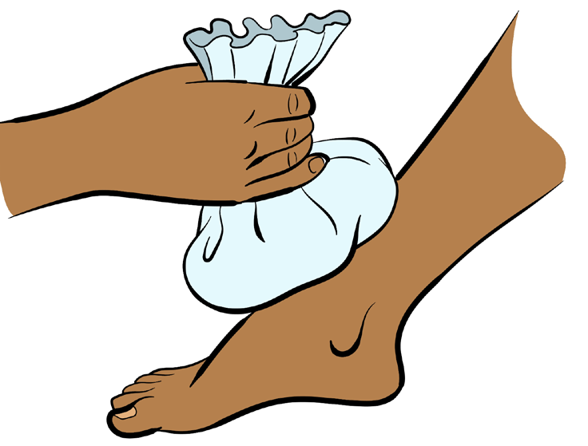
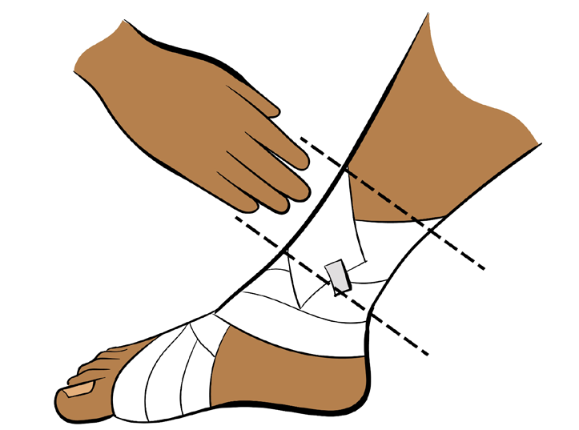

Handling of minor injuries
When your friend gets injured during physical activities, you are required to give initial assistance to reduce the danger of the injury and promote healing. The practice of giving help to an injured person is called first aiding. The protocol of giving first aid is abbreviated as RICER. This is a procedure used to handle various injuries immediately after they occur. RICER helps to relieve pain, reduce swelling and promote healing of the injury.
R - Rest
Stop any activity immediately and lie down in a safe place to ensure rest, stability, and support to an injured part of the body in a comfortable position to limit additional harm.
I - Ice
Icing is the application of a cold pack or an ice pack around an injured area to reduce pain and slow the internal bleeding and swelling.

C - Compress
Compression is the application of slight pressure to the injured area for a closed injury by using compression bandage, as shown in Figure 2.10. For an open injury, compression is applied in the proximal side of the injury. Compression reduces bleeding and swelling.
